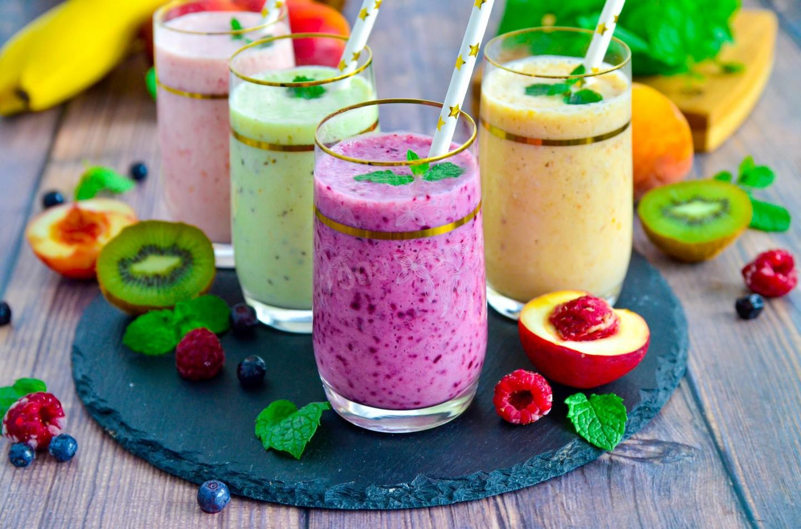
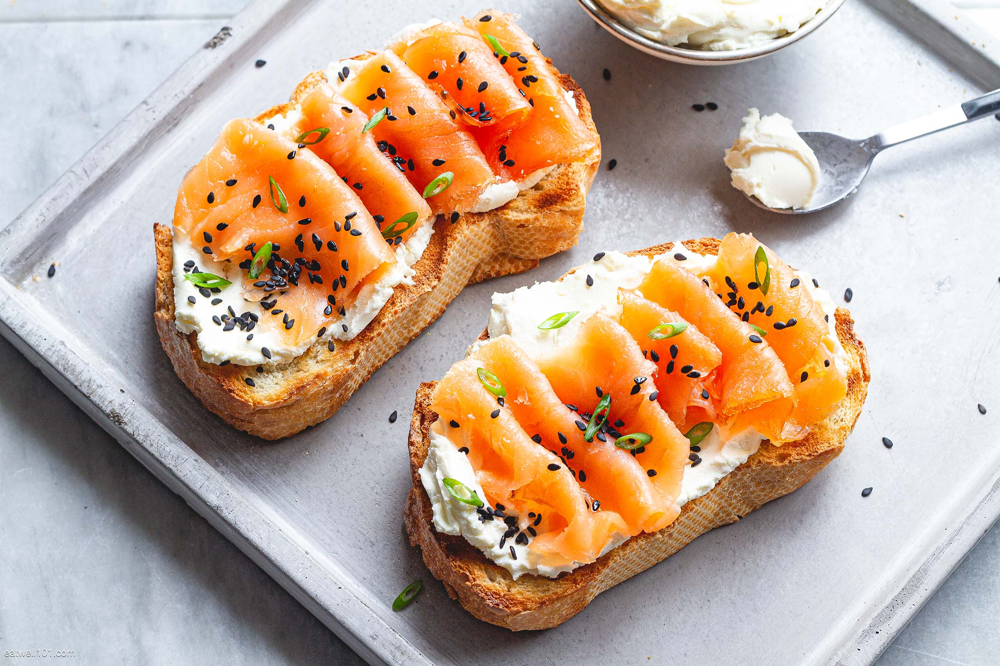
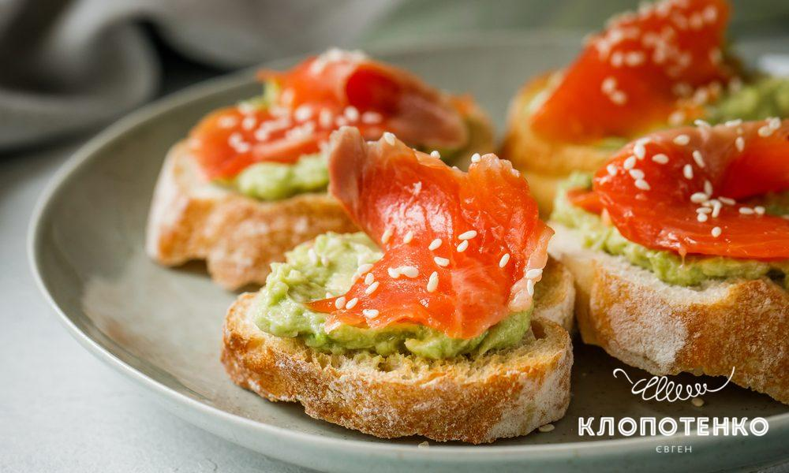
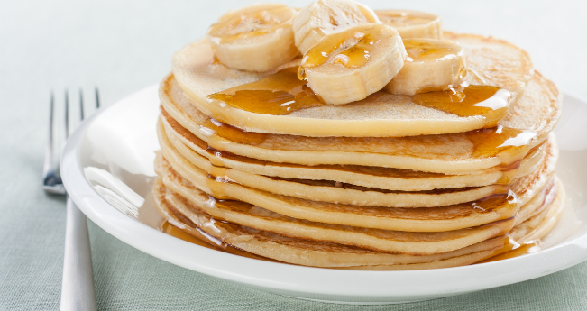

Популярні рецепти

Фруктовий смузі
Легкий і освіжаючий смузі для ідеального початку дня.

Тости з лососем
Смачний варіант на сніданок або перекус із червоною рибою.

Канапки з авокадо
Простий і поживний варіант з авокадо на кожен день.

Бананові панкейки
Солодкий сніданок без цукру — смачно та корисно!